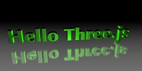

 Three.js介绍 Three.js是一个伟大的开源WebGL库（遵循MIT协议），WebGL允许JavaScript操作GPU，在浏览器端实现真正意义的3D。Three.js项目的目标是为了创建轻量级且低复杂度的3D库，它能让你更方便的进行WebGL编程。 了解更多
选择合适的IDE Three.js是一个伟大的开源WebGL库（遵循MIT协议），WebGL允许JavaScript操作GPU，在浏览器端实现真正意义的3D。Three.js项目的目标是为了创建轻量级且低复杂度的3D库，它能让你更方便的进行WebGL编程。 了解更多
Three.js介绍 Three.js是一个伟大的开源WebGL库（遵循MIT协议），WebGL允许JavaScript操作GPU，在浏览器端实现真正意义的3D。Three.js项目的目标是为了创建轻量级且低复杂度的3D库，它能让你更方便的进行WebGL编程。 了解更多